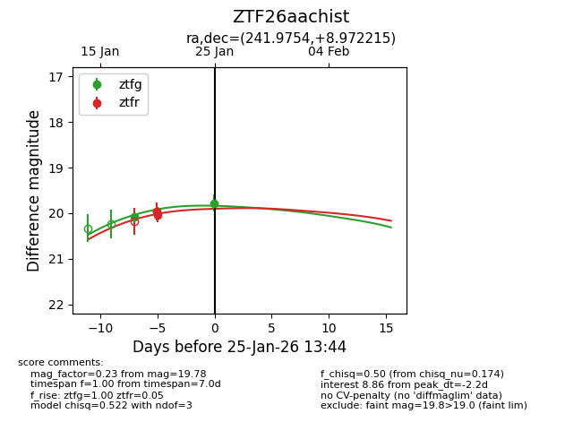
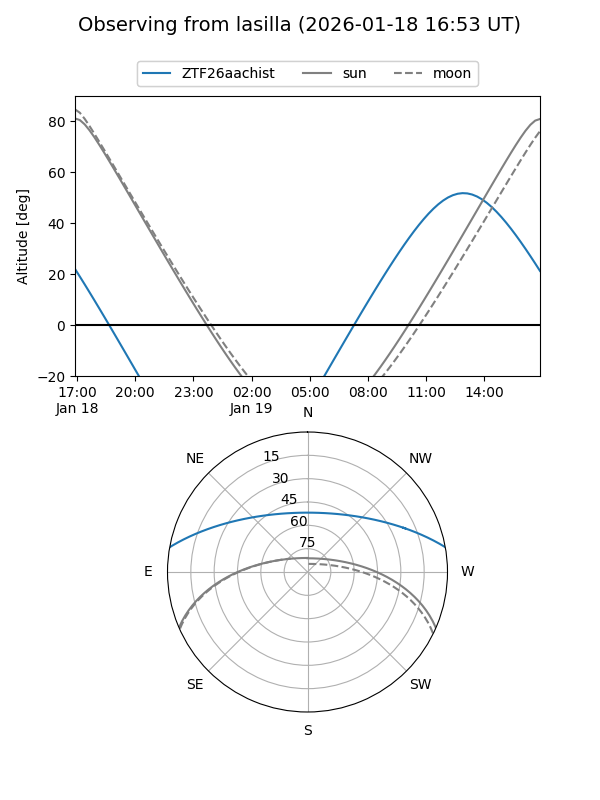
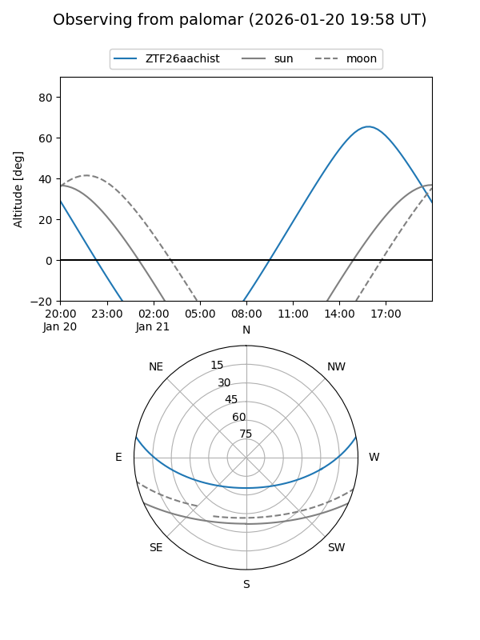
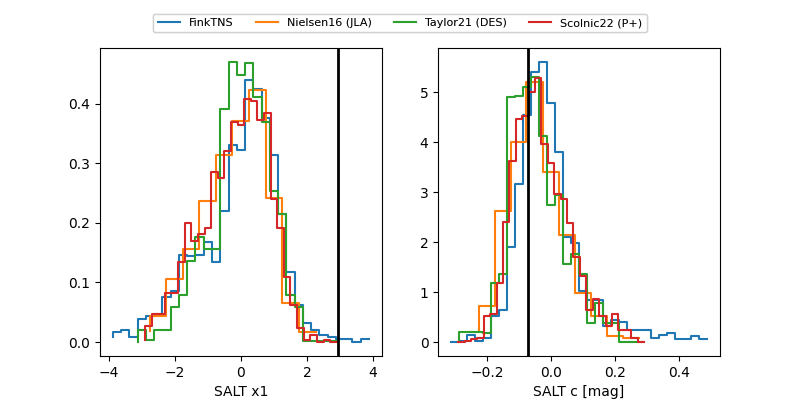

ZTF26aachist
Target ZTF26aachist at 2026-01-18 21:16
Aliases and brokers:
FINK: link
Lasair: link
ALeRCE: link
alt names
ZTF26aachist (ztf,fink_ztf)
Coordinates:
equatorial (ra, dec) = 241.9754,+8.97221
equatorial (HMS+DMS) = 16:07:54.11,+08:58:19.97
galactic (l, b) = (21.1324,+40.27895)
Flags:
Photometry:
last ztfg=20.07
1 ztfg detections
Lightcurve

Visibility


Additional plots
